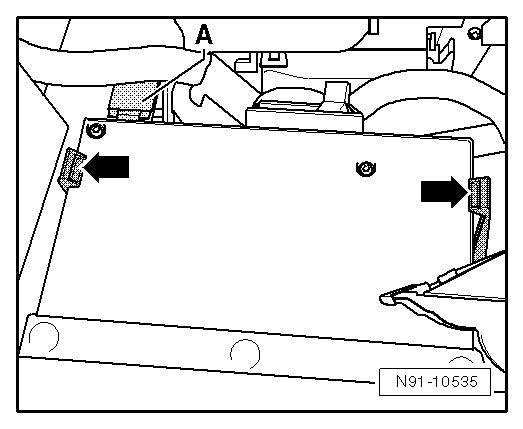
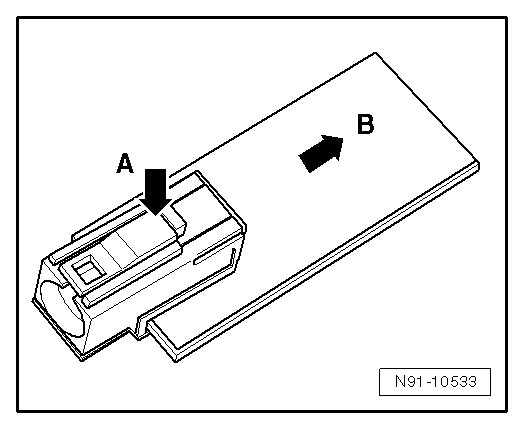
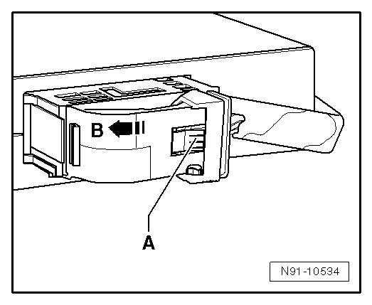

Telephone Transceiver
Telephone Transceiver
The transceiver is installed under the right seat.
Removing
Before starting repair work, perform the following:
- Switch off ignition, switch off all electrical consumers and remove ignition key.
- Operate seat adjustment on right front seat and bring it as far forward and up as possible.
The transceiver is located under the seat and can only be reached from the rear of the vehicle.
- First remove Bluetooth Antenna - A -. To do this, press wiring harness over antenna slightly to one side.

- Operate antenna connector locking mechanism - A - and remove antenna in direction - B - from transceiver.

• The antenna is shown removed to provide a better illustration.
- Operate both retainers - arrows - and remove transceiver.
- Operate locking mechanism - A -, fold bracket in direction - B - and remove connector.

Installing
Install in reverse order of removal.